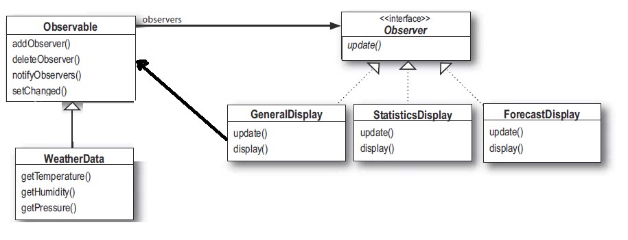

Estación Meteorológica
Tenemos que hacer una api una estación meteorológica para que pueda ser extendida y que se puedan agregar otros elementos de visualización
API:(Application Programming Interface o Interfaz de programación de aplicaciones) es el conjunto de funciones y procedimientos (o métodos, en la programación orientada a objetos) que ofrece cierta biblioteca para ser utilizado por otro software como una capa de abstracción.
Esquema de funcionamiento
Tres son las partes que intervienen en la estación meteorológica
- El dispositivo físico: que toma los datos de los sensores
- WhetherData object: toma los datos que viene de la estación meteorológica y actualiza los dispostivos de visualización, este sabe como comunicarse con el dispositivo físico para obtener los datos actualizados y luego actualizar los display que muestran la información
- El diaplay: que muestra los datos del tiempo actuales
El objetivo del programa es actualizar los displays cuando allá algún cambio en los datos censados
Estación Meteorológica
El clase WhetherData viene con 3 métodos implementados que son los que obtienen los datos de la estación meteorológica, estos son getTemperature(), getHumidity(), getPressure() y un método measurementsChanged() que es invocado por la central meteorológica cada vez que hay un cambio en las mediciones
Nuestra tarea es implementar 3 displays que se alimenten de los datos recolectados por la estación meteorológica, y el método measurementsChanged() de tal manera que se actualicen los displays con las nuevos datos adquiridos
Estación Meteorológica
No tenemos idea como es la implementación de los getters, ni como hace las estación meterelógica para saber cuando invocar a el método measurementsChanged(), pero sabemos que cuando esto ocurre tenemos que leer los datos de la central y actualizar la información en los displays
El sistema tiene que ser expandible para que otros desarrolladores puedan crear nuevos displays personalizados y que además los usuarios puedan agregar y sacar displays de la aplicación
Primera implementación
Qué afirmaciones son ciertas con respecto al código anterior
- Estamos referenciando implementaciones concretas, no interfaces.
En realidad no sabemos si están declarados a un supertipo o a un tipo concreto.
Podría haber estado declarado asi:
en cuyo caso sí, se estaría referenciado a una implementación concreta, o así:
en cuyo caso no estaría referenciado a una interfaz, o estar así.
El hecho de que el nombre del atributo sea específico y no genérico, nos da la idea de que en realidad, si se esta referenciando implementaciones concretas, si se hubieran declarado referenciando a un supertipo se hubiera puesto algo asi:
Primera implementación
Qué afirmaciones son ciertas con respecto al código anterior
- Para cada display nuevo tenemos que modificar el código.
Si en la afirmación anterior dijimos que estábamos referenciando a un tipo concreto entonces, esta es si, ya que una ves que declaramos un atributo de un tipo concreto no podemos cambiarlo en tiempo de ejecución.
y en otra parte hace esto
Ya que estamos atados a un tipo concreto determinado
- No tenemos forma de agregar elementos en tiempo de ejecución.
Para podes cambiar la cantidad de elementos en tiempo de ejecución necesitaríamos una interfaz que referencia a una interfaces
- Los elementos Display no implementan una interfaz común.
- No encapsulamos la parte que cambia.
Por ahora para agregar un Display los programadores tiene que tocar el código de la clase WhetherDataObjet
- Estamos violando el encapsulamiento de la clase WeatherData.
Patrón Observer
Suscripción una a revista
- Hay distintas revistas que hacen sus publicaciones.
- Nos podemos subscribir a las revistas que nos interesa recibir publicaciones.
- El editor de la revista envía cada publicación nueva a todos los que estén suscritos.
- Nos podemos des subscribir cuando no queramos seguir recibiendo las revistas
Si entendemos esto entonces entendemos como trabaja el patrón observer, con la pequeña diferencia que en el patrón llamamos Subject al editor y observers los subscriptores
Patrón Observer
- Por que decimos que la relación es de uno a muchos?
Con el patrón observer el Sujeto es el contiene el estado y lo controla. Osea hay un solo objeto con estado
- Los observadores por el otro lado usan el estado por mas que no lo contengan. Todos los observadores que están observando un objeto delegan la responsabilidad de ser avisados cuando hay un cambio de estado
- La relación es un sujeto, muchos observadores
Implementación

En realidad la relación de asociación es WheatherData tiene una colección de Observers, y no como aparece en la figura donde Subject tiene una colección de Observes, ya que Subject es una interface y no puede tener variables que no sean static final
Implementación
Implementación de la estación meteorológica usando observer
Tomamos el diagrama de clases anterior y empezamos implementar
registerObserver y removeObserver son los método usados por los observadores para registrarse y desregistrarse
notifyObservers es el que invoca el subjet cada ves que cambia de estado para avisarles a los observadores
La interfaz Observer esta implementada por todos los observadores. Todos tiene que implementar el método update()
Los parámetros del método son las variables que el subjet les mantiene actualizadas
Implementación
Modificamos la primera implementación de WheterData usando el patrón Observer
- Agregamos la colección ArrayList para tener una referencia a los observardores.
- En la primera implementación teníamos las relaciones a los observadores pero no era una colección con lo cual no podía tener la cantidad de observadores que se quisieran.
Implementación
Modificamos la primera implentación de WheterData usando el patrón Observer
- Ahora WhetherData implementa la interfaz Subjet. Estos son los métodos que tengo que implementar cuando implemento la interfaz
- Los métodos para agregar registerObserver() y removeObserver() para agregar y quitar observadores
- notifyObservers() es el que hace la magia de avisarles a todos los observadores
Como todos implementan el método update() se les puede avisa por medio de este.
Implementación
Modificamos la primera implentación de WheterData usando el patrón Observer
- measurementsChanged() es el método que se invoca cuando hay un cambio en el estado del Subject. Se podría haber llamado directamente a notifyObservers().
- setMeasurements() es el método que simula la central. Si la central cambiara los valores de los atributos de WhetherStation y luego invocara a measurementsChanged() este método no seria necesario, pero para la simulacion invocamos a este método para lograr un cambio en los atributos y luego invocamos al metod que avisa a los obsevadores, en este caso los displays
Implementación
Ahora los displays
- Como implementa Observer el Subjet sabe que puede informarnos los cambios invocando a update() cuando sea necesario.
- En el constructor le pasamos un objeto subject para registrarse en él, osea se registramos en la estación metereológica que le enviamos acá (podría haber mas de una)
Ademas nos guardamos una referencia a el subject en el cual se registra para el caso que queremos desregsitrarnos
Implementación
Por último la clase para probar
Principio de diseño
Esforzarse por diseños con acoplamiento débil entre los objetos que interactúan
Esto permite diseños OO (orientados a objetos) flexibles
El patrón Obsever provee un diseño donde los sujetos y observadores están débilmente acoplados.
Cuando dos objetos están débilmente acoplados pueden interactuar, pero tienen poco conocimiento el uno del otro.
Por qué decimos que estan debimente acomplados?
- Lo único que sabe el Subjet del observer es que implemeta cierta interface, no necesita saber nada más. Sabe que tiene el método que le obliga a implementar la interfaz e invocandolo puede informarle sus cambios de estado a los observers
- Se pueden agregar o sacar en tiempo de ejecución observers e incluso quedar sin ninguno
- No necesitamos modificar el Subject para agregar nuevos tipos de observers, lo único que importa que que implementen determinada interfaz (Observer).
- Podemos usar subject y observers independientemente unos del otro. En este ejemplo en el constructor se le pasa un objeto subjet, que si lo usamos para otro fin no tendría sentido.
- Los cambios tanto en el observer como en el subject no afectan al otro mientras sigan implementando las interfaces subject y observer respectivamente
Observer de java
Miremos el soporte que tiene java embebido de este patrón

Observer de java
Miremos el soporte que tiene java embebido de este patrón
Java tiene soporte para muchas API pero una de las mas generales es Observer y Observable, que se corresponden con Observer y Subject respectivamente
Inclusive tiene los modos pull y push para notificar a los obsevers
Aplicando el Observer interno a la estación meteorológica
- Subject: Para que un objeto sea Subjet en nuestro ejemplo WhetherData tiene que extender de la clase java.util.Observable y por lo tanto heredar los métodos addObserver(), deleteObserver() y notifyObserver() junto con otros más
- Observers: Observer tiene que implementar la interfaz java.util.Observer e llamar al método addObserver() de cualquier objeto Observable
- Envio de notificaiones del Observable a los observers:
- LLamamr al método setChanged() para informar que hubo un cambio de estado. Esto no existía en nuestra Obsever pero en esta implementación tenemos que setear esto antes de llamar notifyObserver().
Este método no tiene importancia siempre pero sirve por ejemplo en el caso de que un sensor este siempre fluctuando en milésimas y enviando información permanentemente; usando esto podemos bajar la presición para minimizar el envió de información.
- LLamar al método notifyObserver() o notifyObserver(Object arg) que recibe un objeto que se le pasa a cada uno de los observadores
Observer de java
Aplicando el Observer interno a la estación meteorológica
Observer de java
Aplicando el Observer interno a la estación meteorológica
Modificamos el código de WeatherData para usar el Observer embebido de java
Implementación anterior
Implementación nueva
La estructura que usábamos antes para contener los Observes no la necesitamos más. Esto viene por herencia.
Como se puede ver antes implementabamos subject ahora heredamos de Observable
Observer de java
Aplicando el Observer interno a la estación meteorológica
Modificamos el código de WeatherData para usar el Observer embebido de java
Implementación anterior
Implementación nueva
Estos métodos no tenemos la necesidad de implementarlos, vienen por la herencia, estan implementados en la clase Observable.
Observer de java
Aplicando el Observer interno a la estación meteorológica
Modificamos el código de WeatherData para usar el Observer embebido de java
Implementación anterior
Implementación nueva
Ahora antes de llamar a notifyObservers(), tenemos que llamar a setChanged();
Observer de java
Aplicando el Observer interno a la estación meteorológica
Modificamos el código de WeatherData para usar el Observer embebido de java
Implementación anterior - Implementación nueva
Esta parte del código es igual en ambas implementaciones. Estos métodos son los que usan los observers para hacer un pull
Observer de java
Aplicando el Observer interno a la estación meteorológica
Modificamos el código de CurrentConditionsDisplay para usar el Observer embebido de java
Implementación anterior
Iimplementamos el Observer que nosotros definimos
Implementación nueva
Implementamos el Observer de java.util.Observer
Referenciamos Observable en ves de Subject
CurrentConditionsDisplay() recibe Observable en vez de Subject
Observer de java
Aplicando el Observer interno a la estación meteorológica
Modificamos el código de CurrentConditionsDisplay para usar el Observer embebido de java
Implementación anterior
Iimplementamos el Observer que nosotros definimos
Implementación nueva
cambiamos el método update() ahora recibe un objeto Observable y el Objeto de datos (WeatherData)
Observer de java
Desventajas de java.util.Observable
- java.util.Observable esta violando el principio de diseño de programar a interfaces no a implementaciones ya que Observable es una clase concreta y no implementa ninguna clase
- Una explicación de porque no es abstracta para permitir usar composición en ves de herencia, lo cual es necesario cuando la clase que queremos observar ya hereda de otra.
- Otra razón por la que no usa interface porque mantiene la colección de los Observers que se van agregando.
Si hubiera sido una interfaz esto tendría que haber sido una de las cosas que habría que haber implementado
- Observable debería haber sido una interface y ademas proveer una implementación conveniente, como lo que pasa con ArrayList que implementa a la interface List
- Observable es una clase, esto significa que no podemos agregar en el comportamiento de Observable, a otra clase que extiende otra superclase porque en java no hay herencia múltiple
- Ademas como no es una interface no se puede crear una implementación propia que funcione con el Observer embebido, por ejemplo por una implementacion que soporte multi hilos
- Observable debería haber sido una interfaz y java debería proveer una implementación conveniente como es el caso de List que es una interface y ArrayList una implementación de esta.
Patrón Observer
Define una dependencia de uno-a-muchos entre objetos de forma que, cuando un objeto cambia de estado, se notifica a los objetos dependientes para que se actualicen automáticamente.
- Clasificación: Se trata de un patrón de comportamiento en cuanto a propósito, y objeto en cuanto al ámbito , es decir que se ocupa de la comunicación entre objetos interconectados, como objetos incluidos en un objeto complejo.
- Motivación:
- Mantener la consistencia entre objetos relacionados, sin aumentar el acoplamiento entre clases.
- En un toolkit de GUI, separar los objetos de presentación (vistas) de los objetos de datos, de forma que se puedan tener varias vistas sincronizadas de los mismos datos (editor-subscriptor)
- Aplicabilidad:
- Cuando una abstracción tiene dos aspectos, y uno depende del otro. Encapsular los aspectos en objetos distintos permite cambiarlos y reutilizarlos.
- Cuando cambiar un objeto implica cambiar otros, pero no sabemos exactamente cuántos hay que cambiar
- Cuando un objeto debe ser capaz de notificar algo a otros sin hacer suposiciones sobre quiénes son dichos objetos. Esto es, cuando se quiere bajo acoplamiento.
Patrón Observer
- Consecuencias:
- Permite modificar sujetos y observadores de manera independiente
- Permite reutilizar un sujeto sin reutilizar sus observadores, y viceversa
- Permite añadir observadores sin tener que cambiar el sujeto ni los demás observadores
- El sujeto no sabe la clase concreta de sus observadores (mínimo acoplamiento)
- El sujeto envía la notificación a todos los observadores suscritos (broadcast). Se pueden añadir/quitar observadores.
- Una operación en el sujeto puede desencadenar cambios de estado en sus observadores.
- Participantes:
- Subject:conoce a sus observadores, que pueden ser un número arbitrario y proporciona una interfaz para añadir y quitar objetos observadores
- Observer: define la interfaz de los objetos a los que se deben notificar cambios en un sujeto
- ConcreteSubject: almacena el estado de interés para sus observadores y envía notificaciones a sus observadores cuando su estado cambia
- ConcreteObserver: mantiene una referencia a un ConcreteSubject, almacena el estado del sujeto que le resulta de interés, implementa la interfaz de Observer para mantener su estado consistente con el del sujeto
Patrón Observer
- Estructura:

Referencias
Head First Design Patterns
←
→
/
#